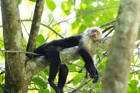
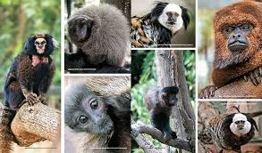

Descubra o incrível mundo dos macacos! Aqui você aprenderá sobre diferentes espécies, seus habitats e curiosidades fascinantes.
Os macacos são animais inteligentes, sociáveis e possuem habilidades surpreendentes. Eles vivem em diversos ambientes ao redor do mundo, desde florestas tropicais até savanas.
Existem mais de 260 espécies de macacos no mundo. Algumas das mais conhecidas incluem o macaco-prego, o babuíno, o chimpanzé e o mico-leão-dourado.
Callithrix spp.
Pequenos, ágeis e carismáticos, os saguis são ícones da fauna brasileira.
Curiosidade: Conseguem girar a cabeça 180° para detectar predadores!Gorilla spp.
Maior primata do mundo, símbolo de força e inteligência.
Curiosidade: Koko, a gorila famosa, aprendeu 1.000 sinais em linguagem gestual.Mandrillus sphinx
Cores vibrantes no rosto e traseiro, um dos primatas mais impressionantes.
Curiosidade: Usam as cores para comunicação social no grupo.Nasalis larvatus
Nariz longo e pendurado (nos machos), adaptado para atrair fêmeas.
Curiosidade: Excelentes nadadores, com pés palmados.Sapajus spp.
Considerados os "gênios" do mundo macaco, usam ferramentas como pedras.
Curiosidade: Observados em rituais de "luto" por mortos do grupo.